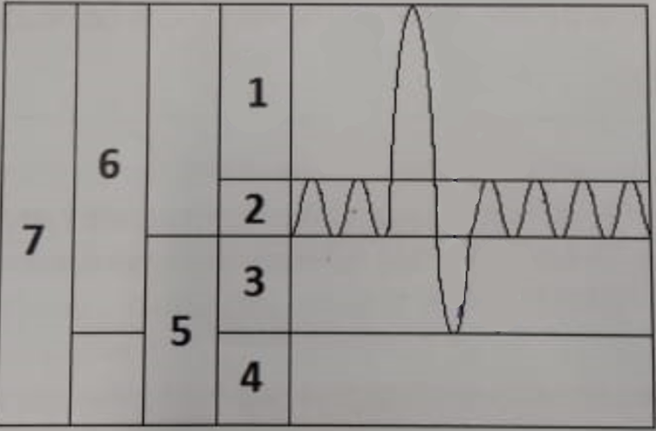

Epreuve fondamentale 2024
📝 Questions
Question 1
Une césarienne réalisée avec l'injection de Rocuronium et terminée aucune réponse n'est observée au train de 4 à l'adducteur du pouce. Quelle est votre conduite à tenir ?
Question 2
Quelles sont les règles de jeûne en anesthésie pédiatrique en ambulatoire et la particularité pour le retour à domicile en voiture ?
Question 3

À partir de ce schéma de la physiologie respiratoire, quel est le volume concerné par la préoxygénation ? Indiquez le numéro correspondant à ce volume.
Question 4
Donnez le nom de la classe médicamenteuse de l'énoxaparine, précisez la dose et la fréquence d'administration de l'énoxaparine pour la prévention thromboembolique postopératoire d'une appendicectomie chez l'obèse (sans insuffisance rénale) selon l'indice de masse corporelle (IMC).
Question 5
Lors de la consultation d'anesthésie, précisez quel est l'intérêt de calculer le score de Lee modifié et donner les éléments pris en compte dans le calcul de ce score.
Question 6
La spectroscopie proche infrarouge est utilisée pour monitorer l'oxymétrie tissulaire cérébrale dans le cadre d'un pontage coronarien sous CEC. À l'exclusion d'un problème technique, quels paramètres peuvent induire une diminution de l'oxymétrie cérébrale ?
Question 7
Quelle valeur(s) de la pression artérielle fera(ont) évoquer chez une femme enceinte une prééclampsie gravidique sévère sans signe de gravité ?
Question 8
À la naissance, lors de l'adaptation à la vie extra-utérine, quelles sont les modifications cardiovasculaires ?
Question 9
Citer les 5 interventions chirurgicales parmi les plus à risque de développement d'une douleur chronique postopératoire ?
Question 10
Quels sont les facteurs de risque qui prédisposent à une complication cardiaque du dropéridol ?
Question 11
Quels sont les objectifs du monitorage neuromusculaire à l'adducteur du pouce pour obtenir une curarisation complète des muscles abdominaux ?
Question 12
Citer les mécanismes physiopathologiques des céphalées par brèche dure-mérienne.
Question 13
Préciser quelles sont les conséquences physiopathologiques cérébrales d'une hyponatrémie sévère (sodium plasmatique inférieur à 125 mmol/l) et énumérer ses manifestations cliniques.
Question 14
Citez les 5 facteurs prédictifs de ventilation au masque difficile chez l'adulte.
Question 15
Préciser le mécanisme d'action de l'atracurium, sa posologie recommandée pour l'intubation ainsi que la voie métabolique.
Question 16
Citer les signes cliniques dans le choc anaphylactique grade III et le traitement médicamenteux.
Question 17
Citer 5 mécanismes pouvant expliquer une hypoxémie.
Question 18
La consultation du dossier informatisé de pneumologie d'un patient vous apporte les renseignements suivants :
Épreuve fonctionnelle respiratoire :
- VEMS 46% (0,9L)
- VEMS post bêta-2 mimétique 49% (+60mL)
- VEMS/CVF 55%
- VEMS/CVF post-bêta2 mimétique 57%
- VR115%
- DLCO 50%
- DLCO/VA 65%
Interprétez les EFR.
Question 19
Au cours d'une anesthésie générale pour cholecystectomie chez un patient de 40 ans sans antécédent survient un arrêt cardiaque. La réanimation cardiovasculaire est débutée immédiatement (pas de no flow). À partir de quel délai considérez-vous que la poursuite du massage cardiaque devient futile ? Existe-t-il une alternative aux massages cardiaques externes ?
Question 20
Chez le patient en peropératoire sous anesthésie générale, intubé, ventilé, vous observez une chute brutale de l'ETCO2. Quels sont les principaux mécanismes qui peuvent expliquer cette situation ?
Question 21
Chez un patient devant bénéficier d'une chirurgie du rachis vous envisagez à la consultation de réaliser une stratégie d'épargne sanguine. Citez les différents moyens pouvant être mis en œuvre.
🚀 Rejoignez notre formation complète
Cette annale fait partie de notre programme de formation. Découvrez notre préparation intensive avec corrections détaillées pour maximiser vos chances de réussite aux EVC.
Découvrir la formation Khypnos